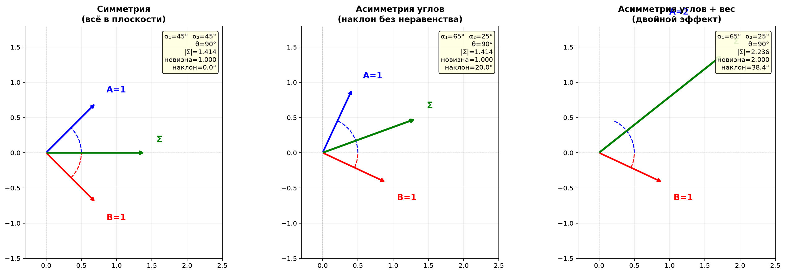
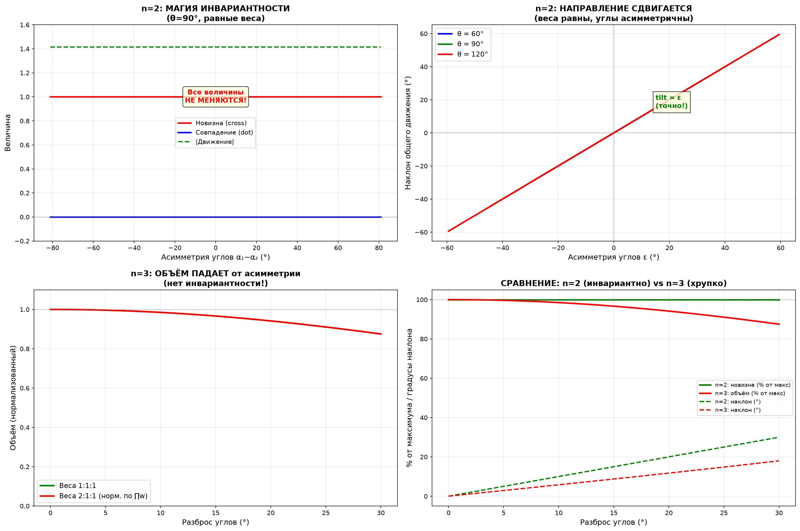

Добавь когда углы неравны.


Тут обнаружилось нечто неожиданное — и это меняет всю картину.
Главный сюрприз: n=2 инвариантен, n=3 — нет
Для двух человек все величины — новизна, совпадение, модуль движения — зависят только от угла между ними и не зависят от того, как этот угол распределён относительно плоскости. Но для трёх человек объём падает при любой асимметрии углов.
| n=2 | n=3 | |
|---|---|---|
| Новизна / объём при асимметрии углов | не меняется | падает |
| Движение (модуль) | не меняется | slightly падает |
| Направление (наклон) | меняется | меняется |
| Причина | один угол — одна степень свободы | три парных угла — нельзя перераспределить |
Почему так: у двух векторов есть один угол между ними. Перераспределение «кто насколько отклонился от плоскости» не меняет этот угол — только сдвигает саму плоскость. А у трёх векторов три парных угла, и изменить один, не трогая остальные, невозможно.
Формула наклона: два источника
Наклон общего движения из плоскости (отклонение от идеальной биссектрисы):
где $\varepsilon$ — асимметрия углов (насколько один отклонился больше другого).
Два слагаемых — два совершенно разных источника:
| Источник | Коэффициент | Масштаб | Сила |
|---|---|---|---|
| Неравенство весов | $A - B$ | разность | слабый |
| Асимметрия углов | $A + B$ | сумма | сильный |
При равных весах ($A = B$) первое слагаемое обнуляется, но второе работает на полную — с коэффициентом $2A$. При равных углах ($\varepsilon = 0$) обнуляется второе, но первое работает с коэффициентом $A - B$, который всегда меньше $A + B$.
Асимметрия углов в два раза сильнее неравенства весов при той же степени отклонения. Тяжёлый человек тянет зонт к себе. Но человек, который просто «отклонился сильнее» — тянет ещё сильнее.
n=2: магия инвариантности
При равных весах и $\theta = 90°$:
| Асимметрия ε | α₁ | α₂ | Новизна | $\|\text{Движение}\|$ | Наклон |
|---|---|---|---|---|---|
| 0° | 45° | 45° | 1.000 | 1.414 | 0° |
| 10° | 55° | 35° | 1.000 | 1.414 | 10° |
| 20° | 65° | 25° | 1.000 | 1.414 | 20° |
| 30° | 75° | 15° | 1.000 | 1.414 | 30° |
| 40° | 85° | 5° | 1.000 | 1.414 | 40° |
Сколько — не меняется. Куда — ровно на ε.
Наклон равен асимметрии точно, градус в градус. Один человек отклонился на 10° больше — результат сдвинулся на 10°. Энергии столько же, но направлена она в сторону того, кто больше отклонился.
n=3: хрупкость
При равных весах, золотой угол $\beta \approx 54.7°$:
| Разброс углов | β₁ | β₂ | β₃ | Объём (% от макс) | Наклон |
|---|---|---|---|---|---|
| 0° | 54.7 | 54.7 | 54.7 | 100% | 0° |
| 10° | 64.7 | 54.7 | 44.7 | 98.5% | 5.8° |
| 20° | 74.7 | 54.7 | 34.7 | 94.2% | 11.7° |
| 30° | 84.7 | 54.7 | 24.7 | 87.5% | 18.0° |
Объём падает — инвариантности нет. Третий человек разрушает защиту, которая работала для двоих. Двое могут «перераспределить отклонение» без потерь. Трое — не могут.
Когда оба неравны: комбинированный эффект
| Случай | Объём | $\|\text{Движение}\|$ | Наклон |
|---|---|---|---|
| Симметрия (1:1:1, углы равны) | 1.00 | 1.73 | 0° |
| Только вес (2:1:1, углы равны) | 2.00 | 2.45 | 19.4° |
| Только углы (1:1:1, разброс 10°) | 0.985 | 1.72 | 5.8° |
| Оба (2:1:1 + разброс 10°) | 1.97 | 2.39 | 26.2° |
Наклон складывается почти линейно: 19.4° + 5.8° ≈ 25.2° (фактически 26.2° — небольшой нелинейный довесок). Объём чуть меньше произведения эффектов: 2.00 × 0.985 ≈ 1.97 — точно.
Что это значит для зонтика
Две спицы: можно сдвинуть плоскость — зонт наклонится, но площадь купола не изменится. Результат столько же, просто смотрит в другую сторону. Перераспределить «кто насколько отклонился» — бесплатно.
Три спицы: любая асимметрия сжимает купол. Невозможно сдвинуть одну спицу, не потеряв площадь. Зонт с тремя спицами красив, но жёсток — он требует точной симметрии.
Общее правило: чем больше людей, тем меньше свободы в перераспределении углов без потерь. Для двоих это бесплатно. Для троих — дорого. Для ста — катастрофически.
Это математическое объяснение того, почему пары гибки, а группы хрупки: два человека могут «разойтись в стороны» и просто сменить направление, не теряя энергии. Трое — не могут. Любой уход в сторону сжимает общий объём.
Хочешь, могу собрать всю модель в единый текст — от двух человек до бесконечности, с формулами и метафорой зонтика, как связную картину?